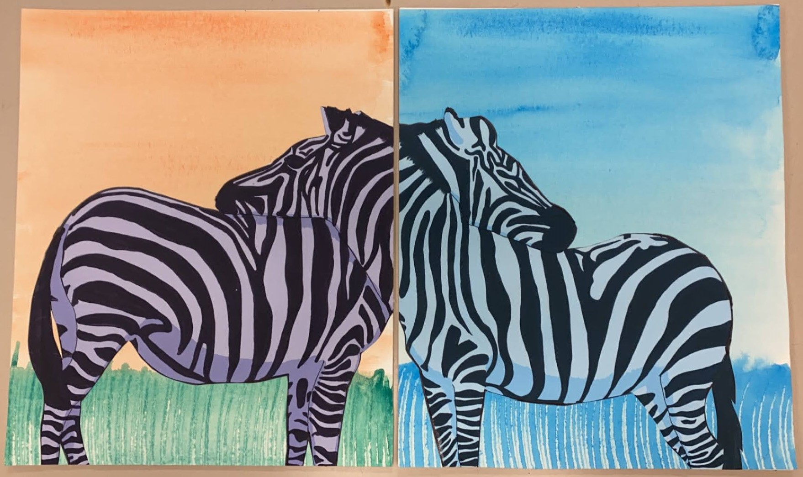

Natalie Verploegen's Second Page
Natalie's Story
Jamie was a curious little girl.
She wondered what people saw when they were colorblind.
Blue?
Green?
Red?
Would they know the difference?
Jamie pondered this under the shade of a large oak tree in the warm sunny day.
Jamie got up and ran out of the park to her house.
Jamie ran to her secret lair (hidden in the shed).
She deviced a special pair of glasses.
They would only allow her to see certain colors.
Blue in one eye. Green, purple, and orange in the other eye.
Jamie left her lair with the special spectacles.
The world looked extrodinary.
-Next summer-
Jamie and her parents traveled to Africa!
She was so excited and brought her glass to experience the wrold.
She saw two Zebras hugging and decided to draw what she saw.

Artwork by Natalie Verploegen
Go To Third Page
Go To Home Page